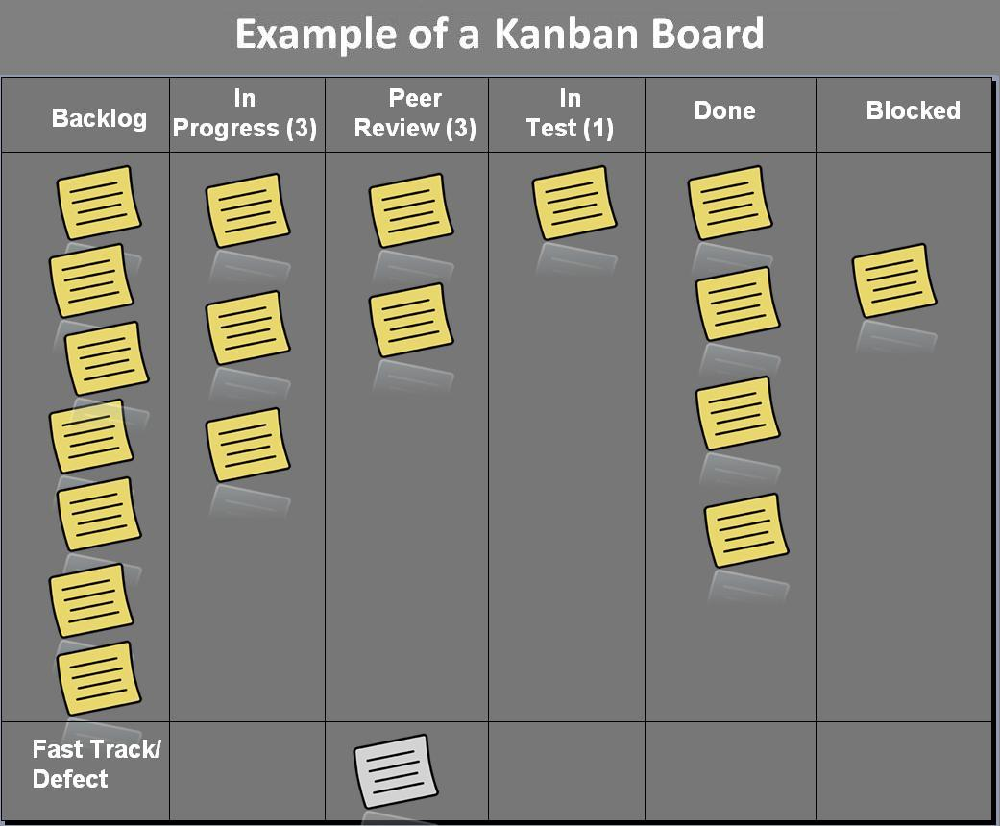

Managing the Chaos
An agile approach to being a startup
Chuck Liddell, Valence
Topics
- Agile Methodology
- Collaboration / Communication
- Change Management
- Testing
- CRM
- Decisions / Prioritization
Fist of Five

Agile Methodology
The Agile Manifesto
- Individuals and interactions over processes and tools
- Working software over comprehensive documentation
- Customer collaboration over contract negotiation
- Responding to change over following a plan
While there is value in the items on the right, we value the items on the left more.
Waterfall Model
Agile Model

What is a User Story?
A user story is an informal, general explanation of a software feature written from the perspective of the end user. Its purpose is to articulate how a software feature will provide value to the customer.
Source: AtlassianExample User Story
As a manager, I want to be able to understand my colleagues progress, so I can better report our success and failures.
Kanban Board
Scrum Board
Scrum Team
Source: http://scrumtrainingseries.com/Intro_to_Scrum/Intro_to_Scrum.htmScrum Meetings

Collaboration & Communication
Comms - Easy wins
Goal: Give everyone a voice, without creating a cacophonous mess
- Get discussions where they belong
- STOP SENDING EMAILS
- Get customers and stakeholders into the conversation
Google Calendar (GCal Link)
Slack (Slack Link)
Atlassian JIRA (Jira Link)
Atlassian Confluence (Wiki Link)
CRM: What is it?
Customer relationship management (CRM) is an approach to managing a company's interaction with current and future customers. It often involves using technology to organize, automate, and synchronize sales, marketing, customer service, and technical support.
Change Management
- What has changed?
- Why did it change?
- What is going to change?
- Why is it going to change?
- Who needs to know about it?
An Example
Git (Git Link)

Github (Github Link)
Testing
Tests, tests, tests...
| Approaches | Types |
|---|---|
|
|
|
Test-driven development Continuous testing / integration / deployment |
|
Testing will set you free...
Decisions/Prioritization
Prioritization
See: https://www.lucidchart.com/blog/eisenhower-matrixThe Last Responsible Moment
Concurrent software development means starting development when only partial requirements are known and developing in short iterations that provide the feedback that causes the system to emerge. Concurrent development makes it possible to delay commitment until the last responsible moment, that is, the moment at which failing to make a decision eliminates an important alternative.-Lean Software Development: An Agile Toolkit
Two Roles
- Create Value
- Sell Value
Tips/Advice
Find partners, but be picky.
Trust your gut. Believe in your team.
Keep it simple.
Be hungry for knowledge.
Focus! Protect your time.
Wrap Up / Discussion

Useful Links
- DON’T do these 68 things in your SaaS company
https://www.cbinsights.com/reports/saas-startup-mistakes.pdf - Kauffman Sketchbook - "Money Game”
https://www.youtube.com/watch?v=U470xXKfDyE